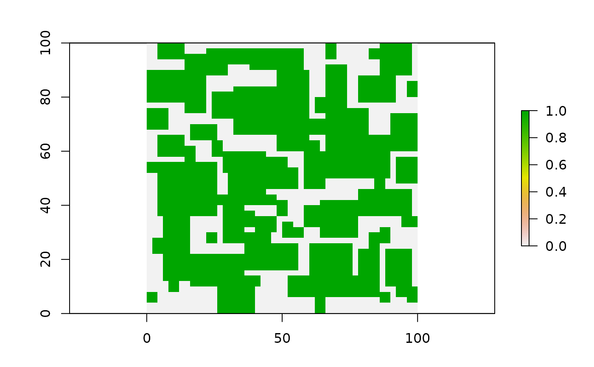

establish_by_space.RdHeuristic field establishment based on simple geometries
establish_by_space(
potential_space,
cell_size,
includsion_value,
additional_lim = NA,
mean_field_size,
sd_field_size,
mean_shape_index,
sd_shape_index,
percent,
assign_farmers,
assign_mode,
mean_fields_per_farm,
sd_fields_per_farm
)a raster including a potential space category for field placement
cell size for output
inclusion value for the potential space raster
additional road/river/exclusion raster for field exclusion
mean field size counted by number of cells from a normal distribution
sd field size counted by number of cells from a normal distribution
mean shape index calculated by a relation between width/length of placement
sd shape index calculated by a relation between width/length of placement
percent of the potential space to be filled with fields
TRUE/FALSE for farmer assignment in model
1 = random assignment 2 = spatially structured assignment
mean fields per farmer from a long normal distribution
sd fields per farmer from a long normal distribution
A LGrafEU output object
r<-raster::raster(matrix(1, nrow=50, ncol=50))
raster::extent(r)<-c(0,100,0,100)
test<-establish_by_space(potential_space= r,
cell_size=2,
includsion_value = 1,
mean_field_size = 50,
sd_field_size = 25,
mean_shape_index = 1,
sd_shape_index = 0.5,
percent = 65,
assign_farmers = TRUE,
assign_mode = 2,
mean_fields_per_farm = 5,
sd_fields_per_farm = 5)
raster::plot(test$map)
